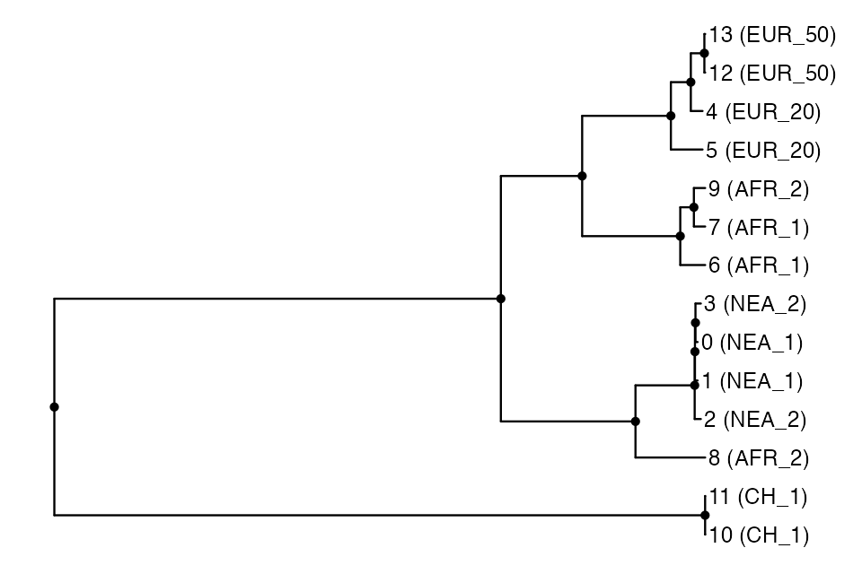

Tree-sequence processing and statistics
Source:vignettes/vignette-05-tree-sequences.Rmd
vignette-05-tree-sequences.RmdIn this vignette, we will show how to specify sampling events to record individuals in the tree-sequence output file (a procedure which is called “remembering” of individuals in the SLiM context) and how to perform simple analyses using slendr’s interface to the tskit Python library. We will demonstrate these features on a simulation of Neanderthal introgression into anatomically modern humans. Specifically, we will show how to estimate the amount of Neanderthal ancestry using \(f\)-statistics calculated directly on the tree-sequence data structure generated by a slendr model, all entirely from R.
Setting up Python environment
First, in order to be able to interface with tskit and
pyslim using the reticulate package (and run
simulations using msprime, as we do below), we will need a
working Python environment with the required Python modules
pyslim, tskit and msprime already
installed.
Because setting up Python environments can be quite a hassle, slendr provides a
single function setup_env() to make things easier. If you
call it without any arguments, slendr will automatically
download, install, and setup a completely separate
Python environment (based on the “miniconda” distribution) just for
slendr and activate it in the background.
It is important to stress that setup_env() will not
interfere in any way with any of the Python installations you might
already have on your computer. The Python installation and environment
will be entirely isolated and used just for the purpose of
slendr workflows.
Once we have the Python environment set up, we can activate it by calling:
init_env()#> The interface to all required Python modules has been activated.We can use another built-in function check_env() to make
sure that slendr installed and configured the correct
environment for us:
#> Summary of the currently active Python environment:
#>
#> Python binary: /Users/mp/Library/r-miniconda-arm64/envs/Python-3.11_msprime-1.2.0_tskit-0.5.4_pyslim-1.0.1/bin/python
#> Python version: 3.11.0 | packaged by conda-forge | (main, Jan 14 2023, 12:26:40) [Clang 14.0.6 ]
#>
#> slendr requirements:
#> - tskit: version 0.5.4 ✓
#> - msprime: version 1.2.0 ✓
#> - pyslim: version 1.0.1 ✓Now we’re good to go and ready to simulate and analyse tree sequence outputs in R!
Model of Neanderthal introgression into Eurasians
First, let’s set up a simple non-spatial model of
Neanderthal introgression using slendr. This is essentially the
same procedure which we have shown in another vignette introducing non-spatial slendr
models. This is no different from a spatial model, except that we
left out the map argument in calling
population().
#>
#> Attaching package: 'dplyr'#> The following objects are masked from 'package:stats':
#>
#> filter, lag#> The following objects are masked from 'package:base':
#>
#> intersect, setdiff, setequal, union
set.seed(314159)
# create the ancestor of everyone and a chimpanzee outgroup
# (we set both N = 1 to reduce the computational time for this model)
chimp <- population("CH", time = 6.5e6, N = 1000)
# two populations of anatomically modern humans: Africans and Europeans
afr <- population("AFR", parent = chimp, time = 6e6, N = 10000)
eur <- population("EUR", parent = afr, time = 70e3, N = 5000)
# Neanderthal population splitting at 600 ky ago from modern humans
# (becomes extinct by 40 ky ago)
nea <- population("NEA", parent = afr, time = 600e3, N = 1000, remove = 40e3)
# 3% Neanderthal introgression into Europeans between 55-50 ky ago
gf <- gene_flow(from = nea, to = eur, rate = 0.03, start = 55000, end = 45000)
model <- compile_model(
populations = list(chimp, nea, afr, eur), gene_flow = gf,
generation_time = 30,
path = paste0(tempfile(), "_introgression")
)Here’s our toy model visualized as a “demographic graph” of sorts (i.e., a tree-like structure specifying population splits with additional edges representing gene flow events). Not particularly illuminating in this simple example, but it’s always worth keeping in mind that such graph is embedded within every slendr model and can be always invoked to make sure the model you’re setting up is correct:
cowplot::plot_grid(
plot_model(model, sizes = FALSE),
plot_model(model, sizes = FALSE, log = TRUE),
nrow = 1
)
Scheduling of sampling events
Now that we have defined a model, how do we sample data from it?
Ideally, we would like to to schedule sampling events at a given time,
sampling a defined number of individuals from a given population. This
is why slendr provides a function
schedule_sampling() which serves to define such sampling
schedule automatically and enforces that only populations which are
already (i.e. after their appearance in the simulation) or still (before
they are removed from the simulation) present will be sampled from.
In our example, we want to sample two Neanderthal individuals (the older one being the Altai Neanderthal published by Pruefer et al. 2014, the younger one Vindija Neanderthal published by Pruefer et al., 2017). These two genomes are what we need to estimate Neanderthal ancestry proportion using a so-called \(f_4\)-ratio statistic (more on that below, but also see Petr et al., PNAS 2019):
nea_samples <- schedule_sampling(model, times = c(70000, 40000), list(nea, 1))
nea_samples#> # A tibble: 2 × 7
#> time pop n y_orig x_orig y x
#> <int> <chr> <int> <lgl> <lgl> <lgl> <lgl>
#> 1 40000 NEA 1 NA NA NA NA
#> 2 70000 NEA 1 NA NA NA NAAs you can see, the schedule_sampling() function simply
accepts the vector of times at which remembering should be schedule, and
then a list of pairs
(<slendr population>, <number of individuals>)
encoding from which populations should how many individuals be
remembered at time points given in the times vector.
Next, we want to sample some present-day individuals: an outgroup representing a chimpanzee, and a couple of Africans and Europeans:
present_samples <- schedule_sampling(model, times = 0, list(chimp, 1), list(afr, 5), list(eur, 10))
present_samples#> # A tibble: 3 × 7
#> time pop n y_orig x_orig y x
#> <int> <chr> <int> <lgl> <lgl> <lgl> <lgl>
#> 1 0 CH 1 NA NA NA NA
#> 2 0 AFR 5 NA NA NA NA
#> 3 0 EUR 10 NA NA NA NAAs you can see above, the schedule_sampling() function
returns a plain old data frame with a very simple structure with three
columns: time, population name, and the number of individuals. This
means that you can define sampling events using whatever input data you
might already have available (such as radiocarbon-dated ancient DNA
samples from an Excel sheet from some publication). For instance, there
has been a lot
of interest to estimate the trajectory of Neanderthal ancestry in Europe
over time using ancient DNA data from anatomically modern human
individuals (also called early modern humans, EMH) across the last
couple of tens of thousands of years. We can simulate something close to
the available EMH
ancient DNA data set over the last 50 thousand years by running
doing this:
emh_samples <- schedule_sampling(model, times = runif(n = 40, min = 10000, max = 40000), list(eur, 1))
emh_samples#> # A tibble: 40 × 7
#> time pop n y_orig x_orig y x
#> <int> <chr> <int> <lgl> <lgl> <lgl> <lgl>
#> 1 10320 EUR 1 NA NA NA NA
#> 2 11188 EUR 1 NA NA NA NA
#> 3 11396 EUR 1 NA NA NA NA
#> 4 11529 EUR 1 NA NA NA NA
#> 5 11927 EUR 1 NA NA NA NA
#> 6 12675 EUR 1 NA NA NA NA
#> 7 13689 EUR 1 NA NA NA NA
#> 8 13744 EUR 1 NA NA NA NA
#> 9 14775 EUR 1 NA NA NA NA
#> 10 16362 EUR 1 NA NA NA NA
#> # ℹ 30 more rowsThis samples a single ancient European individuals at randomly chosen times between 40 and 10 ky ago.
One nice feature of the schedule_sampling() function is
that it only schedules sampling events for a population, if that
population is present in the simulation at a given time. This makes it
possible to simply take a wide time range for sampling, specify all
populations and sizes of the samples, and let the function generate
sampling events only for populations present at each time. If for some
reason a stricter control over sampling is required, this behavior can
be switched off by setting strict = TRUE like this:
# this attempts to sample a Neanderthal individual at a point when Neanderthals
# are already extinct, resulting in an error
schedule_sampling(model, times = 10000, list(nea, 1), strict = TRUE)Error: Cannot schedule sampling for 'NEA' at time 10000 because the population will not be present in the simulation at that point. Consider running this function with `strict = FALSE` which will automatically retain only valid sampling events.Now that we already have the model object ready, we can
simulate data from it, sampling individuals according to our sampling
schedule. Although we could use the slim() function shown
in previous vignettes, in this case we will run the simulation with the
msprime() coalescent back end. After all, our model is
non-spatial and using a coalescent simulator will be much more efficient
than the forward simulation. Switching between the msprime and SLiM back
ends of slendr is demonstrated in much more detail in a dedicated vignette.
The simulation back end utilized by the msprime()
function (as well as the slim() function) produces a
tree-sequence output which is immediately loaded and ready for a
downstream analysis.
ts <- msprime(
model, sequence_length = 100e6, recombination_rate = 1e-8,
samples = rbind(nea_samples, present_samples, emh_samples),
random_seed = 314159, verbose = TRUE
)#> --------------------------------------------------
#> msprime command:
#>
#> /Users/mp/Library/r-miniconda-arm64/envs/Python-3.11_msprime-1.2.0_tskit-0.5.4_pyslim-1.0.1/bin/python /var/folders/d_/hblb15pd3b94rg0v35920wd80000gn/T//RtmpJmVorf/file4c492cb0963f_introgression/script.py --seed 314159 --model /var/folders/d_/hblb15pd3b94rg0v35920wd80000gn/T//RtmpJmVorf/file4c492cb0963f_introgression --output /var/folders/d_/hblb15pd3b94rg0v35920wd80000gn/T//RtmpJmVorf/file4c493b2ee5de.trees --sequence-length 100000000 --recombination-rate 1e-08 --sampling-schedule /var/folders/d_/hblb15pd3b94rg0v35920wd80000gn/T//RtmpJmVorf/file4c4913aaeef8 --verbose
#> --------------------------------------------------
#>
#> Tree sequence was saved to:
#> /var/folders/d_/hblb15pd3b94rg0v35920wd80000gn/T//RtmpJmVorf/file4c493b2ee5de.trees
#> Loading the tree-sequence file...
ts#> ╔═══════════════════════════╗
#> ║TreeSequence ║
#> ╠═══════════════╤═══════════╣
#> ║Trees │ 237615║
#> ╟───────────────┼───────────╢
#> ║Sequence Length│ 100000000║
#> ╟───────────────┼───────────╢
#> ║Time Units │generations║
#> ╟───────────────┼───────────╢
#> ║Sample Nodes │ 116║
#> ╟───────────────┼───────────╢
#> ║Total Size │ 36.5 MiB║
#> ╚═══════════════╧═══════════╝
#> ╔═══════════╤══════╤═════════╤════════════╗
#> ║Table │Rows │Size │Has Metadata║
#> ╠═══════════╪══════╪═════════╪════════════╣
#> ║Edges │859795│ 26.2 MiB│ No║
#> ╟───────────┼──────┼─────────┼────────────╢
#> ║Individuals│ 58│ 1.6 KiB│ No║
#> ╟───────────┼──────┼─────────┼────────────╢
#> ║Migrations │ 0│ 8 Bytes│ No║
#> ╟───────────┼──────┼─────────┼────────────╢
#> ║Mutations │ 0│ 16 Bytes│ No║
#> ╟───────────┼──────┼─────────┼────────────╢
#> ║Nodes │138806│ 3.7 MiB│ No║
#> ╟───────────┼──────┼─────────┼────────────╢
#> ║Populations│ 4│338 Bytes│ Yes║
#> ╟───────────┼──────┼─────────┼────────────╢
#> ║Provenances│ 1│ 7.0 KiB│ No║
#> ╟───────────┼──────┼─────────┼────────────╢
#> ║Sites │ 0│ 16 Bytes│ No║
#> ╚═══════════╧══════╧═════════╧════════════╝Note that we bind the individual sampling schedule data frames using
the rbind function provided by base R (as we show above,
the sampling schedule really is just a data frame and we can manipulate
it as such).
R interface for tskit and pyslim
Tree-sequences are one of the most revolutionary developments in population genetics in the last couple of decades for a number of reasons. One of them is the possibility to store extremely large data sets succinctly by encoding the entire evolutionary history of a sample of individuals as a series of correlated tree genealogies along the genome.
Going into too much detail on this topic is clearly beyond the scope of this tutorial, especially because everything is explain much better elsewhere. Instead, what we will demonstrate in the rest of this vignette is how you can access and manipulate tree-sequence outputs generated by slendr models and perform various statistics on them using Python modules tskit and pyslim directly from slendr, without having to leave R! The key is a magical R package reticulate which creates a seamless binding of Python modules with R. This means that even if you don’t know Python, slendr allows you to do do quite a lot with tree-sequences in R.
Of course, if you are a proficient Python user, it needs to be said that once you have the tree-sequence file generated by slendr & SLiM, you can easily perform every conceivable analysis directly using tskit. The intention here is to show how you can continue working on the tree-sequence files in R even after you have run the entire slendr simulation.
Loading and processing tree-sequence output files
By default, any msprime() or slim() run
will produce a tree-sequence object (saved to a temporary file) and
immediately load it. Thus, in most use-cases, explicit loading of a
simulated tree sequence is not needed. That said, for the sake of
completeness, let’s run the simulation again but specify a custom path
to the tree-sequence file ourselves.
output_file <- tempfile()
ts <- msprime(
model, sequence_length = 100e6, recombination_rate = 1e-8,
samples = rbind(nea_samples, present_samples, emh_samples),
output = output_file, random_seed = 314159
)
output_file#> [1] "/var/folders/d_/hblb15pd3b94rg0v35920wd80000gn/T//RtmpJmVorf/file4c4966979c62"In case have the tree-sequence output saved in a custom location on
disk, we can load the tree sequence using the slendr function
ts_load(). If we’re dealing with a tree sequence produced
by the SLiM back end (which is not the case here), we can also instruct
this function to simplify the tree-sequence to only the individuals that
we explicitly sampled (recall the sampling schedule we set up with the
schedule_sampling() function above). Note that we have to
provide the model object generated by
compile_model() above in order to have all model annotation
information for the simulated tree-sequence data (we have to do this
only once, and only during loading):
ts <- ts_load(output_file, model)
ts#> ╔═══════════════════════════╗
#> ║TreeSequence ║
#> ╠═══════════════╤═══════════╣
#> ║Trees │ 237615║
#> ╟───────────────┼───────────╢
#> ║Sequence Length│ 100000000║
#> ╟───────────────┼───────────╢
#> ║Time Units │generations║
#> ╟───────────────┼───────────╢
#> ║Sample Nodes │ 116║
#> ╟───────────────┼───────────╢
#> ║Total Size │ 36.5 MiB║
#> ╚═══════════════╧═══════════╝
#> ╔═══════════╤══════╤═════════╤════════════╗
#> ║Table │Rows │Size │Has Metadata║
#> ╠═══════════╪══════╪═════════╪════════════╣
#> ║Edges │859795│ 26.2 MiB│ No║
#> ╟───────────┼──────┼─────────┼────────────╢
#> ║Individuals│ 58│ 1.6 KiB│ No║
#> ╟───────────┼──────┼─────────┼────────────╢
#> ║Migrations │ 0│ 8 Bytes│ No║
#> ╟───────────┼──────┼─────────┼────────────╢
#> ║Mutations │ 0│ 16 Bytes│ No║
#> ╟───────────┼──────┼─────────┼────────────╢
#> ║Nodes │138806│ 3.7 MiB│ No║
#> ╟───────────┼──────┼─────────┼────────────╢
#> ║Populations│ 4│338 Bytes│ Yes║
#> ╟───────────┼──────┼─────────┼────────────╢
#> ║Provenances│ 1│ 7.0 KiB│ No║
#> ╟───────────┼──────┼─────────┼────────────╢
#> ║Sites │ 0│ 16 Bytes│ No║
#> ╚═══════════╧══════╧═════════╧════════════╝Not surprisingly, we get the same output which we got above when we
printed the tree sequence returned by the msprime()
function. This shows that under normal circumstances, loading the output
manually via ts_load() is not needed.
If we try to simplify an msprime-generated tree sequence, we get a warning. This is because such tree sequence is already in a simplified form, by definition coming from a coalescent simulator.
ts_simplify(ts)#> Warning: If you want to simplify an msprime tree sequence, you must specify
#> the names of individuals to simplify to via the `simplify_to = `
#> function argument.#> ╔═══════════════════════════╗
#> ║TreeSequence ║
#> ╠═══════════════╤═══════════╣
#> ║Trees │ 237615║
#> ╟───────────────┼───────────╢
#> ║Sequence Length│ 100000000║
#> ╟───────────────┼───────────╢
#> ║Time Units │generations║
#> ╟───────────────┼───────────╢
#> ║Sample Nodes │ 116║
#> ╟───────────────┼───────────╢
#> ║Total Size │ 36.5 MiB║
#> ╚═══════════════╧═══════════╝
#> ╔═══════════╤══════╤═════════╤════════════╗
#> ║Table │Rows │Size │Has Metadata║
#> ╠═══════════╪══════╪═════════╪════════════╣
#> ║Edges │859795│ 26.2 MiB│ No║
#> ╟───────────┼──────┼─────────┼────────────╢
#> ║Individuals│ 58│ 1.6 KiB│ No║
#> ╟───────────┼──────┼─────────┼────────────╢
#> ║Migrations │ 0│ 8 Bytes│ No║
#> ╟───────────┼──────┼─────────┼────────────╢
#> ║Mutations │ 0│ 16 Bytes│ No║
#> ╟───────────┼──────┼─────────┼────────────╢
#> ║Nodes │138806│ 3.7 MiB│ No║
#> ╟───────────┼──────┼─────────┼────────────╢
#> ║Populations│ 4│338 Bytes│ Yes║
#> ╟───────────┼──────┼─────────┼────────────╢
#> ║Provenances│ 1│ 7.0 KiB│ No║
#> ╟───────────┼──────┼─────────┼────────────╢
#> ║Sites │ 0│ 16 Bytes│ No║
#> ╚═══════════╧══════╧═════════╧════════════╝By default, simplification trims the tree sequence down to only
remembered individuals (i.e. those we explicitly scheduled for
sampling), which is true for every msprime tree sequence.
Alternatively, we can also narrow down the simplification to a defined
set of individuals using the simplify_to = argument.
Internally, simplification is implemented in a dedicated function
ts_simplify() which we can always call explicitly, like
this:
ts_small <- ts_simplify(ts, simplify_to = c("CH_1", "NEA_1", "NEA_2", "AFR_1", "AFR_2", "EUR_20", "EUR_50"))
ts_small#> ╔═══════════════════════════╗
#> ║TreeSequence ║
#> ╠═══════════════╤═══════════╣
#> ║Trees │ 132530║
#> ╟───────────────┼───────────╢
#> ║Sequence Length│ 100000000║
#> ╟───────────────┼───────────╢
#> ║Time Units │generations║
#> ╟───────────────┼───────────╢
#> ║Sample Nodes │ 14║
#> ╟───────────────┼───────────╢
#> ║Total Size │ 19.0 MiB║
#> ╚═══════════════╧═══════════╝
#> ╔═══════════╤══════╤═════════╤════════════╗
#> ║Table │Rows │Size │Has Metadata║
#> ╠═══════════╪══════╪═════════╪════════════╣
#> ║Edges │440810│ 13.5 MiB│ No║
#> ╟───────────┼──────┼─────────┼────────────╢
#> ║Individuals│ 7│220 Bytes│ No║
#> ╟───────────┼──────┼─────────┼────────────╢
#> ║Migrations │ 0│ 8 Bytes│ No║
#> ╟───────────┼──────┼─────────┼────────────╢
#> ║Mutations │ 0│ 16 Bytes│ No║
#> ╟───────────┼──────┼─────────┼────────────╢
#> ║Nodes │ 79569│ 2.1 MiB│ No║
#> ╟───────────┼──────┼─────────┼────────────╢
#> ║Populations│ 4│338 Bytes│ Yes║
#> ╟───────────┼──────┼─────────┼────────────╢
#> ║Provenances│ 2│ 7.5 KiB│ No║
#> ╟───────────┼──────┼─────────┼────────────╢
#> ║Sites │ 0│ 16 Bytes│ No║
#> ╚═══════════╧══════╧═════════╧════════════╝Similarly, slendr provides a function
ts_recapitate() which performs [recapitation]https://tskit.dev/pyslim/docs/latest/tutorial.html#recapitation).
Again, this is not needed for an msprime tree sequence, which
is fully coalesced (and recapitated) by definition. Still, if we were
dealing with a SLiM tree sequence, which is the case for some of our
other vignetted, we could do this in one go, by specifying
recapitate = TRUE in the call to ts_load()
after specifying a couple of additional arguments required for
recapitation (see the pyslim documentation in the recapitation
section for more detail). If we do this on our current tree sequence
object, we simply get a warning informing us that we’re attempting to do
something that has no effect:
ts <- ts_recapitate(ts, recombination_rate = 1e-8, Ne = 10000)We can make sure that our tree sequence is fully coalesced by calling
another slendr function ts_coalesced(). This is
useful when dealing with slim()-produced tree
sequences:
ts_coalesced(ts)#> [1] TRUEYou might have noticed that we did not simulate any mutations during the SLiM run. This is for computational efficiency. Luckily, the tree-sequence contains the complete history of a sample of individuals which makes it very easy to sprinkle mutations on the genealogies after this simulation is over. We can add mutations a given rate by running:
ts <- ts_mutate(ts, mutation_rate = 1e-8, random_seed = 314159)
ts#> ╔═══════════════════════════╗
#> ║TreeSequence ║
#> ╠═══════════════╤═══════════╣
#> ║Trees │ 237615║
#> ╟───────────────┼───────────╢
#> ║Sequence Length│ 100000000║
#> ╟───────────────┼───────────╢
#> ║Time Units │generations║
#> ╟───────────────┼───────────╢
#> ║Sample Nodes │ 116║
#> ╟───────────────┼───────────╢
#> ║Total Size │ 73.3 MiB║
#> ╚═══════════════╧═══════════╝
#> ╔═══════════╤══════╤═════════╤════════════╗
#> ║Table │Rows │Size │Has Metadata║
#> ╠═══════════╪══════╪═════════╪════════════╣
#> ║Edges │859795│ 26.2 MiB│ No║
#> ╟───────────┼──────┼─────────┼────────────╢
#> ║Individuals│ 58│ 1.6 KiB│ No║
#> ╟───────────┼──────┼─────────┼────────────╢
#> ║Migrations │ 0│ 8 Bytes│ No║
#> ╟───────────┼──────┼─────────┼────────────╢
#> ║Mutations │622315│ 22.0 MiB│ No║
#> ╟───────────┼──────┼─────────┼────────────╢
#> ║Nodes │138806│ 3.7 MiB│ No║
#> ╟───────────┼──────┼─────────┼────────────╢
#> ║Populations│ 4│338 Bytes│ Yes║
#> ╟───────────┼──────┼─────────┼────────────╢
#> ║Provenances│ 2│ 7.7 KiB│ No║
#> ╟───────────┼──────┼─────────┼────────────╢
#> ║Sites │620386│ 14.8 MiB│ No║
#> ╚═══════════╧══════╧═════════╧════════════╝Having processed the simulated tree sequence, we can calculate some basic statistics on our simulated data.
However, before we do that, we would first like to note that
everything that we do in the rest of this vignette (i.e. whenever we
call a function with the prefix ts_*() in slendr),
we are interfacing with the tskit Python module under the hood.
Our goal is to capture most of the analyses one might want to perform on
tree-sequences in R and wrap them in a neat interface indistinguishable
from any other R function—this is, after all, the reason why
reticulate has been created in the first place (making various
Python data science modules appear as if they were regular R
packages).
Visualisation of trees and tree-sequences
Now we introduce a function ts_phylo() which can be used
to extract one tree from the tree-sequence (either an i-th tree
in the sequence, or a tree overlapping an i-th position of the
simulated genome, depending on the value of its mode
argument) and convert it to a phylo class, which is a
standard format for phylogenetic trees in the R world. For more on the
phylo format, see packages ape, phangorn, and phytools.
# extract the 42nd tree in the tree sequence
tree <- ts_phylo(ts_small, 42)#> Starting checking the validity of tree...
#> Found number of tips: n = 14
#> Found number of nodes: m = 13
#> Done.When we type the tree object to an R console, we can verify that we
got an ordinary phylo object:
tree#>
#> Phylogenetic tree with 14 tips and 13 internal nodes.
#>
#> Tip labels:
#> 13 (EUR_50), 12 (EUR_50), 11 (CH_1), 10 (CH_1), 9 (AFR_2), 8 (AFR_2), ...
#> Node labels:
#> 77849, 70, 3964, 11736, 12966, 16714, ...
#>
#> Rooted; includes branch lengths.This means that we have the whole R phylogenetic ecosystem at our disposal to analyze such trees. For instance we can use the powerful package ggtree to plot the tree we have just extracted:
#> ggtree v3.6.2 For help: https://yulab-smu.top/treedata-book/
#>
#> If you use the ggtree package suite in published research, please cite
#> the appropriate paper(s):
#>
#> Guangchuang Yu, David Smith, Huachen Zhu, Yi Guan, Tommy Tsan-Yuk Lam.
#> ggtree: an R package for visualization and annotation of phylogenetic
#> trees with their covariates and other associated data. Methods in
#> Ecology and Evolution. 2017, 8(1):28-36. doi:10.1111/2041-210X.12628
#>
#> Guangchuang Yu. Data Integration, Manipulation and Visualization of
#> Phylogenetic Trees (1st edition). Chapman and Hall/CRC. 2022,
#> doi:10.1201/9781003279242
#>
#> G Yu. Data Integration, Manipulation and Visualization of Phylogenetic
#> Trees (1st ed.). Chapman and Hall/CRC. 2022. ISBN: 9781032233574
ggtree(tree) +
geom_point2(aes(subset = !isTip)) + # points for internal nodes
geom_tiplab() + # sample labels for tips
hexpand(0.1) # make more space for the tip labels
library(ape)
plot(tree)
nodelabels()Accessing tskit functionality directly
As we mentioned in the previous section, the goal of this vignette is
to show how to use slendr to perform the main tree-sequence
operations using a convenient R interface to tskit. However,
you should always keep in mind that you are not restricted to a subset
of tskit functionality that slendr translated to R
(i.e. all functions with the
prefix ts_). Thanks to the incredible R package reticulate,
you can access Python methods and object variables directly, using the
$ operator.
As an example, instead of calling the function
ts_coalesced() on the tree-sequence as we did above, we
could check that all trees are coalesced by running the following
snippet instead (note that this is very inefficient and we’re only doing
the operation for the first one hundred trees):
# iterate over all trees in the tree-sequence and check if each
# has only one root (i.e. is fully coalesced) - note that Python
# lists are 0-based, which is something we need to take care of
all(sapply(seq_len(ts$num_trees)[1:100],
function(i) ts$at_index(i - 1)$num_roots == 1))We believe it makes sense to use the R interface whenever possible (even if only because it makes many operations a little bit more convenient). However, if there is some functionality in slendr missing, you can always resort to accessing the Python objects directly as we have just demonstrated. You can verify that all methods and attributes of a Python tree-sequence object is still accessible in R:
names(ts)#> [1] "alignments" "allele_frequency_spectrum"
#> [3] "as_fasta" "as_nexus"
#> [5] "as_vcf" "aslist"
#> [7] "at" "at_index"
#> [9] "breakpoints" "check_index"
#> [11] "coalescence_time_distribution" "coiterate"
#> [13] "count_topologies" "decapitate"
#> [15] "delete_intervals" "delete_sites"
#> [17] "diffs" "discrete_genome"
#> [19] "discrete_time" "divergence"
#> [21] "diversity" "draw_svg"
#> [23] "draw_text" "dump"
#> [25] "dump_tables" "dump_text"
#> [27] "edge" "edge_diffs"
#> [29] "edges" "edges_child"
#> [31] "edges_left" "edges_parent"
#> [33] "edges_right" "edgesets"
#> [35] "equals" "f2"
#> [37] "f3" "f4"
#> [39] "file_uuid" "first"
#> [41] "Fst" "genealogical_nearest_neighbours"
#> [43] "general_stat" "genetic_relatedness"
#> [45] "genotype_matrix" "get_ll_tree_sequence"
#> [47] "get_num_mutations" "get_num_nodes"
#> [49] "get_num_records" "get_num_sites"
#> [51] "get_num_trees" "get_pairwise_diversity"
#> [53] "get_population" "get_sample_size"
#> [55] "get_samples" "get_sequence_length"
#> [57] "get_time" "haplotypes"
#> [59] "has_reference_sequence" "ibd_segments"
#> [61] "indexes_edge_insertion_order" "indexes_edge_removal_order"
#> [63] "individual" "individual_locations"
#> [65] "individual_populations" "individual_times"
#> [67] "individuals" "individuals_flags"
#> [69] "individuals_location" "individuals_population"
#> [71] "individuals_time" "kc_distance"
#> [73] "keep_intervals" "last"
#> [75] "ll_tree_sequence" "load"
#> [77] "load_tables" "ltrim"
#> [79] "max_root_time" "max_time"
#> [81] "mean_descendants" "metadata"
#> [83] "metadata_schema" "migration"
#> [85] "migrations" "migrations_dest"
#> [87] "migrations_left" "migrations_node"
#> [89] "migrations_right" "migrations_source"
#> [91] "migrations_time" "min_time"
#> [93] "mutation" "mutations"
#> [95] "mutations_node" "mutations_parent"
#> [97] "mutations_site" "mutations_time"
#> [99] "nbytes" "newick_trees"
#> [101] "node" "nodes"
#> [103] "nodes_flags" "nodes_individual"
#> [105] "nodes_population" "nodes_time"
#> [107] "num_edges" "num_individuals"
#> [109] "num_migrations" "num_mutations"
#> [111] "num_nodes" "num_populations"
#> [113] "num_provenances" "num_samples"
#> [115] "num_sites" "num_trees"
#> [117] "pairwise_diversity" "parse_windows"
#> [119] "population" "populations"
#> [121] "provenance" "provenances"
#> [123] "records" "reference_sequence"
#> [125] "rtrim" "sample_count_stat"
#> [127] "sample_size" "samples"
#> [129] "segregating_sites" "sequence_length"
#> [131] "simplify" "site"
#> [133] "sites" "sites_position"
#> [135] "split_edges" "subset"
#> [137] "table_metadata_schemas" "tables"
#> [139] "tables_dict" "Tajimas_D"
#> [141] "time_units" "to_macs"
#> [143] "to_nexus" "trait_correlation"
#> [145] "trait_covariance" "trait_linear_model"
#> [147] "trait_regression" "trees"
#> [149] "trim" "union"
#> [151] "variants" "write_fasta"
#> [153] "write_nexus" "write_vcf"
#> [155] "Y1" "Y2"
#> [157] "Y3"In fact, you will recognize some of the elements in the output above
from examples involving ts_ functions in this vignette! In
short, there is no blackbox—slendr only provides a slightly
more convenient layer over tskit for R users.
Calculating f-statistics
In addition to being a revolutionary breakthrough in terms of computation efficiency, many statistics that we are often interested in population genetics are a natural consequence of having a direct access to tree sequence genealogies, simply because those genealogies capture the true demographic history of a sample. Again, we can’t go into too much detail here but we encourage you to take a look at a paper by Ralph et al. on the duality between statistics expressed in terms of branch lengths and the traditional summaries based on samples of genetic variation.
For instance, we have functions such as ts_f2(),
ts_f3(), ts_f4() and ts_f4ratio()
which calculate the well-known set of Patterson’s \(f\)-statistics:
# f2 is a measure of the branch length connecting A and B
ts_f2(ts, A = "EUR_1", B = "AFR_1")#> # A tibble: 1 × 3
#> A B f2
#> <chr> <chr> <dbl>
#> 1 EUR_1 AFR_1 0.0000393
# f4 is a measure of the drift shared between A and B after their split from C
ts_f3(ts, A = "EUR_1", B = "AFR_1", C = "CH_1")#> # A tibble: 1 × 4
#> A B C f3
#> <chr> <chr> <chr> <dbl>
#> 1 EUR_1 AFR_1 CH_1 0.0000107
# this value should be very close to zero (no introgression in Africans)
ts_f4(ts, "AFR_1", "AFR_2", "NEA_1", "CH_1", mode = "branch")#> # A tibble: 1 × 5
#> W X Y Z f4
#> <chr> <chr> <chr> <chr> <dbl>
#> 1 AFR_1 AFR_2 NEA_1 CH_1 -16.9
# this value should be significantly negative (many more ABBA sites
# compared to BABA site due to the introgression into Europeans)
ts_f4(ts, "AFR_1", "EUR_1", "NEA_1", "CH_1", mode = "branch")#> # A tibble: 1 × 5
#> W X Y Z f4
#> <chr> <chr> <chr> <chr> <dbl>
#> 1 AFR_1 EUR_1 NEA_1 CH_1 -565.These functions accept a mode = argument, specifying
whether the statistics should be calculated using mutation site patterns
(mode = "site", the default), branch lengths
(mode = "branch"), or for each node
(mode = "node"), as well as the windows
argument, similarly to other “multiway” statistics implemented by tskit.
See the relevant
sections
of the official tskit documentation for more on this topic.
Note that in the previous chunk we referred to individuals by their
names (not numeric IDs of nodes as you would do it with tskit
in Python). We allow this for readability and to make it easier to see
which individuals are which based on the specified sampling schedule
(the names are assigned to individuals based on the order of their
sampling). We can get an overview of the individuals scheduled for
sampling (i.e. permanently remembered) and their names with a helper
function ts_samples():
ts_samples(ts)#> # A tibble: 58 × 3
#> name time pop
#> <chr> <dbl> <chr>
#> 1 NEA_1 70000 NEA
#> 2 NEA_2 40000 NEA
#> 3 EUR_1 39171 EUR
#> 4 EUR_2 39134 EUR
#> 5 EUR_3 37739 EUR
#> 6 EUR_4 36531 EUR
#> 7 EUR_5 36362 EUR
#> 8 EUR_6 35945 EUR
#> 9 EUR_7 33900 EUR
#> 10 EUR_8 33854 EUR
#> # ℹ 48 more rowsThat said, if you would like to run some statistics on nodes rather than on individuals, you can do it simply by using integer IDs instead of character names in each function’s interface.
Estimating Neanderthal ancestry proportions
Let’s try to put these new tools to practice and estimate the
proportion of Neanderthal ancestry in Africans and Europeans in our
simulated data. We can do this using the Patterson’s \(f_4\)-ratio statistic implemented in the
ts_f4ratio() function in slendr (you can find more
information about this particular version of the statistic in Petr
et al., PNAS 2019):
# first get a table of simulated African and European individuals in the tree-sequence
inds <- ts_samples(ts) %>% dplyr::filter(pop %in% c("AFR", "EUR"))
# estimate the amounts of Neanderthal ancestry in these individuals and add
# these values to the table
inds$ancestry <- ts_f4ratio(ts, X = inds$name, "NEA_1", "NEA_2", "AFR_1", "CH_1")$alphaIf we now summarise the inferred Neanderthal distribution in both populations, we see that there is no Neanderthal ancestry in Africans (as expected by our model–Africans did not receive a Neanderthal introgression pulse) but there is a small proportion of Neanderthal ancestry in Europeans (consistent with the 3% introgression pulse we simulated between):
ggplot(inds, aes(pop, ancestry, fill = pop)) +
geom_boxplot() +
geom_jitter() +
labs(y = "Neanderthal ancestry proportion", x = "") +
theme(legend.position = "none") +
coord_cartesian(ylim = c(0, 0.1))
This is exactly as we specified in the model configuration above, suggesting that our simulations work as they should. You can see that there is quite a bit of noise but that’s because we simulated only a small amount of sequence.
We can also plot the trajectory of Neanderthal ancestry in Europe during the time-window for which we have simulated ancient and present-day DNA samples:
dplyr::filter(inds, pop == "EUR") %>%
ggplot(aes(time, ancestry)) +
geom_point() +
geom_smooth(method = "lm", linetype = 2, color = "red", linewidth = 0.5) +
xlim(40000, 0) + coord_cartesian(ylim = c(0, 0.1)) +
labs(x = "time [years ago]", y = "Neanderthal ancestry proportion")#> `geom_smooth()` using formula = 'y ~ x'
Again, this is a result consistent with empirical estimates of Neanderthal ancestry using ancient DNA data (see Petr et al., PNAS 2019).
ADMIXTOOLS analyses
In case you would like to verify some f-statistics results
using the venerable ADMIXTOOLS
software (see the linked paper which formally introduced these
statistics in the first place), you can convert the tree-sequence data
to a file format called EIGENSTRAT using the
ts_eigenstrat() function. The file conversion is internally
handled by the R package admixr and returns an
EIGENSTRAT object which ties all individual
EIGENSTRAT file components together (see the tutorial
to admixr for an extensive overview). admixr is an R
package for running automated ADMIXTOOLS analyses entirely from R and
makes these types of analyses very convenient.
snps <- ts_eigenstrat(ts, prefix = file.path(tempdir(), "eigenstrat", "data"))#> 1287 multiallelic sites (0.207% out of 620386 total) detected and removedRunning an admixr analysis is then as easy as plugging the
object into an admixr function. For instance, we can estimate
the proportion of Neanderthal ancestry in a couple of individuals \(X\) like this (admixr calls this
proportion alpha):
library(admixr)
f4ratio(data = snps, X = c("EUR_1", "EUR_2", "AFR_2"),
A = "NEA_1", B = "NEA_2", C = "AFR_1", O = "CH_1")#> Rows: 3 Columns: 12
#> ── Column specification ────────────────────────────────────────────────────────
#> Delimiter: " "
#> chr (8): X1, X2, X3, X4, X5, X6, X7, X8
#> dbl (4): X9, X10, X11, X12
#>
#> ℹ Use `spec()` to retrieve the full column specification for this data.
#> ℹ Specify the column types or set `show_col_types = FALSE` to quiet this message.#> # A tibble: 3 × 8
#> A B X C O alpha stderr Zscore
#> <chr> <chr> <chr> <chr> <chr> <dbl> <dbl> <dbl>
#> 1 NEA_1 NEA_2 EUR_1 AFR_1 CH_1 0.0177 0.00567 3.13
#> 2 NEA_1 NEA_2 EUR_2 AFR_1 CH_1 0.0286 0.00967 2.96
#> 3 NEA_1 NEA_2 AFR_2 AFR_1 CH_1 -0.000606 0.00243 -0.25In fact, lets compare the values obtained by both tskit and admixr/ADMIXTOOLS for all individuals:
europeans <- inds[inds$pop == "EUR", ]$name
# tskit result
result_ts <- ts_f4ratio(ts, X = europeans, A = "NEA_1", B = "NEA_2", C = "AFR_1", O = "CH_1") %>% select(alpha_ts = alpha)
# result obtained by admixr/ADMIXTOOLS
result_admixr <- f4ratio(snps, X = europeans, A = "NEA_1", B = "NEA_2", C = "AFR_1", O = "CH_1") %>% select(alpha_admixr = alpha)#> Rows: 50 Columns: 12
#> ── Column specification ────────────────────────────────────────────────────────
#> Delimiter: " "
#> chr (8): X1, X2, X3, X4, X5, X6, X7, X8
#> dbl (4): X9, X10, X11, X12
#>
#> ℹ Use `spec()` to retrieve the full column specification for this data.
#> ℹ Specify the column types or set `show_col_types = FALSE` to quiet this message.
bind_cols(result_admixr, result_ts) %>%
ggplot(aes(alpha_ts, alpha_admixr)) +
geom_point() +
geom_abline(slope = 1, linetype = 2, color = "red", linewidth = 0.5) +
labs(x = "f4-ratio statistic calculated with admixr/ADMIXTOOLS",
y = "f4-ratio statistic calculated with tskit")
The correspondence between the two looks good! 🎉 Again, note that the large amount of variance around the expected value of 3% ancestry is due to an extremely small amount of sequence data simulated here.
VCF output
In case you need to process simulated data in some other software,
you can use the function ts_vcf() to save the simulated
genotypes in a VCF format:
You can also specify only a subset of individuals to be saved in the VCF:
Other statistics
What follows is a very brief overview of other statistics which are implemented in tskit and for which slendr provides an easy-to-use R interface. As you will see, the goal of these functions is to get you to a result using a single function call, making them very convenient for quick interactive exploratory analyses on the simulated data right in the R console.
We will continue to use our simulated Neanderthal introgression tree-sequence data for these examples.
\(F_{st}\)
The \(F_{st}\) statistic is
implemented by the function ts_fst().
If a single genome-wide \(F_{st}\)
is to be calculated (i.e. not a window-based calculation), the
ts_fst() returns a simple three-column data frame
#> # A tibble: 1 × 3
#> x y Fst
#> <chr> <chr> <dbl>
#> 1 afr eur 0.0475In case a non-named list of sample sets was provided, set names are generated automatically:
#> # A tibble: 1 × 3
#> x y Fst
#> <chr> <chr> <dbl>
#> 1 set_1 set_2 0.0475Of course, this is much less readable and we encourage you to name the sample sets appropriately.
In case more than two sample sets are specified, all pairwise statistics are computed:
ts_fst(ts, sample_sets = list(afr = c("AFR_1", "AFR_2", "AFR_3"),
eur = c("EUR_1", "EUR_2"),
nea = c("NEA_1", "NEA_2")))#> # A tibble: 3 × 3
#> x y Fst
#> <chr> <chr> <dbl>
#> 1 afr eur 0.0475
#> 2 afr nea 0.553
#> 3 eur nea 0.536As with many other statistics implemented by tskit,
ts_fst() accepts a windows argument,
specifying the breakpoints between windows. In this case, the
Fst column in the resulting data frame is a so called
“list-column”, with each item in the column being a vector of \(F_{st}\) values, one per each window.
List-columns can be a little confusing for new R users, but we highly
encourage you to get used to them as they allow extremely concise and
elegant handling of structured data within normal data frames (you can
start with this
introduction).
# define breakpoints between 20 windows
breakpoints <- seq(0, ts$sequence_length, length.out = 21)
# calculate window-based Fst statistic
win_fst <- ts_fst(
ts, windows = breakpoints,
sample_sets = list(afr = c("AFR_1", "AFR_2", "AFR_3"),
eur = c("EUR_1", "EUR_2"),
nea = c("NEA_1", "NEA_2"))
)
# we get 20 values for each parwise calculation
win_fst#> # A tibble: 3 × 3
#> x y Fst
#> <chr> <chr> <named list>
#> 1 afr eur <dbl [20]>
#> 2 afr nea <dbl [20]>
#> 3 eur nea <dbl [20]>For instance, here are window-based \(F_st\) values for the
afr-vs-eur calculation (first row of the table above):
win_fst[1, ]$Fst#> $`1`
#> [1] 0.05295365 0.06322827 0.04193092 0.04470269 0.06213078 0.04110568
#> [7] 0.04707814 0.05186687 0.02966762 0.02858609 0.03569889 0.04908546
#> [13] 0.06360736 0.06657169 0.03077708 0.03133374 0.05636180 0.05387645
#> [19] 0.04000369 0.05913374Tajima’s \(D\)
The function ts_tajima() has nearly the same interface
as ts_fst() shown above.
If a non-window version is to be calculated, we get a single genome-wide values for each sample set (named or non-named list of character vectors with individual names):
#> # A tibble: 2 × 2
#> set D
#> <chr> <dbl>
#> 1 afr 0.0347
#> 2 eur 0.00301For window-based version, the function returns the D
column as a list column of vectors with \(i\)-th element being the Tajima’s D value
for the \(i\)-th window:
#> # A tibble: 2 × 2
#> set D
#> <chr> <named list>
#> 1 afr <dbl [20]>
#> 2 eur <dbl [20]>Diversity
We can calculate diversity within given groups of individuals with
the function ts_diversity(). For instance, even in our
extremely simplified example, we would expect the highest levels of
diversity in Africans, followed by Europeans, Neanderthals and the
“degenerate” single individual outgroup “chimpanzee”. Is this true?
Let’s find out.
First we extract individuals from all populations, creating a list of
character vectors for each group (which is what functions such as
ts_diversity() expects as an input):
# get sampled individuals from all populations
sample_sets <- ts_samples(ts) %>%
split(., .$pop) %>%
lapply(function(pop) pop$name)
sample_sets#> $AFR
#> [1] "AFR_1" "AFR_2" "AFR_3" "AFR_4" "AFR_5"
#>
#> $CH
#> [1] "CH_1"
#>
#> $EUR
#> [1] "EUR_1" "EUR_2" "EUR_3" "EUR_4" "EUR_5" "EUR_6" "EUR_7" "EUR_8"
#> [9] "EUR_9" "EUR_10" "EUR_11" "EUR_12" "EUR_13" "EUR_14" "EUR_15" "EUR_16"
#> [17] "EUR_17" "EUR_18" "EUR_19" "EUR_20" "EUR_21" "EUR_22" "EUR_23" "EUR_24"
#> [25] "EUR_25" "EUR_27" "EUR_26" "EUR_28" "EUR_29" "EUR_30" "EUR_31" "EUR_32"
#> [33] "EUR_33" "EUR_34" "EUR_35" "EUR_36" "EUR_37" "EUR_38" "EUR_39" "EUR_40"
#> [41] "EUR_41" "EUR_42" "EUR_43" "EUR_44" "EUR_45" "EUR_46" "EUR_47" "EUR_48"
#> [49] "EUR_49" "EUR_50"
#>
#> $NEA
#> [1] "NEA_1" "NEA_2"Now we can calculate diversity in each population and sort the results in an increasing order of diversity:
ts_diversity(ts, sample_sets) %>% dplyr::arrange(diversity)#> # A tibble: 4 × 2
#> set diversity
#> <chr> <dbl>
#> 1 CH 0.0000428
#> 2 NEA 0.0000456
#> 3 EUR 0.000395
#> 4 AFR 0.000402Great! This matches our expectations. We simulated chimp “population” as only one individual, so we expect essentially no diversity after millions of years of evolution.
Divergence
We can calculate pairwise divergence between groups of individuals
using the function ts_divergence(). Given our model, we
would expect the lowest divergence between the two modern human groups
AFR and EUR, then between Neanderthals and the
two modern humans, and all three groups (AFR,
EUR and NEA) should have equal, much deeper
divergence from the outgroup chimpanzee CH.
ts_divergence(ts, sample_sets) %>% arrange(divergence)#> # A tibble: 6 × 3
#> x y divergence
#> <chr> <chr> <dbl>
#> 1 AFR EUR 0.000450
#> 2 EUR NEA 0.000757
#> 3 AFR NEA 0.000779
#> 4 CH NEA 0.00400
#> 5 CH EUR 0.00401
#> 6 AFR CH 0.00402After sorting the table based on the value in the divergence column, we can see the results fit our expectations.
More information
These were only a couple of examples of statistical functions implemented in tskit for which we provide a native R interface in slendr. You can find more tree-sequence statistics in the reference manual on the project website. Not all statistics from the tskit library are implemented, but we intend to expand the selection provided by slendr in the near future. If there is some functionality that you would like to use in your project missing in slendr, please don’t hesitate to let us now by creating an issue on our GitHub page.
Finally, if you would like to see more examples of tskit interface in action, take a look at the vignette which describes switching between the SLiM and msprime back ends of the slendr package.